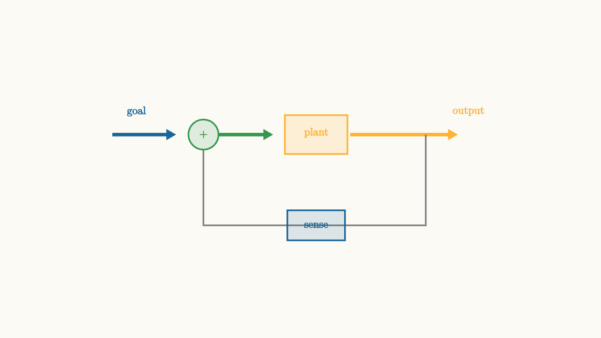

Feedback Makes Systems Behave
Open-loop circuits act on an input and produce an output. Feedback circuits measure the output, compare it with a goal, and use the error to drive the system.
That comparison changes the whole personality of the circuit.
An amplifier with high open-loop gain can become a precise closed-loop amplifier. A regulator can reject load changes. An oscillator can sustain motion. A control loop can make a motor follow a command.

source
background = [0.985, 0.98, 0.955, 1]
camera = Camera(4.8b)
mesh diagram = block {
. color{BLUE} Arrow(start: [-3.0, 0.55, 0], end: [-2.0, 0.55, 0])
. fill{alpha{0.14} GREEN} stroke{GREEN, 2} center{[-1.55, 0.55, 0]} Circle(0.24)
. center{[-1.55, 0.55, 0]} color{GREEN} Text("+", 0.62)
. color{GREEN} Arrow(start: [-1.3, 0.55, 0], end: [-0.45, 0.55, 0])
. fill{alpha{0.16} ORANGE} stroke{ORANGE, 2} center{[0.25, 0.55, 0]} Rect([1.0, 0.62])
. center{[0.25, 0.58, 0]} color{ORANGE} Text("plant", 0.62)
. color{ORANGE} Arrow(start: [0.8, 0.55, 0], end: [2.5, 0.55, 0])
. stroke{GRAY, 2} Polyline([[2.0, 0.55, 0], [2.0, -0.9, 0], [-1.55, -0.9, 0], [-1.55, 0.3, 0]])
. fill{alpha{0.14} BLUE} stroke{BLUE, 2} center{[0.25, -0.9, 0]} Rect([0.92, 0.48])
. center{[0.25, -0.9, 0]} color{BLUE} Text("sense", 0.62)
. center{[-2.62, 0.92, 0]} color{BLUE} Text("goal", 0.62)
. center{[2.68, 0.92, 0]} color{ORANGE} Text("output", 0.62)
}
"feedback loop"
play Fade(0.6)The simplest negative-feedback formula is
Here $G(s)$ is the forward path and $H(s)$ is the feedback path. The denominator is the new object. It decides stability, bandwidth, and how disturbances move through the loop.
When the loop gain $G(s)H(s)$ is large and the sign is negative, the output is forced to make the error small. That is the magic of feedback: the circuit uses its own mistake as an input.
Precision from large gain
Consider an op-amp wired as a non-inverting amplifier. The op-amp itself may have enormous open-loop gain that changes with temperature, manufacturing, and frequency. With feedback resistors, the closed-loop gain becomes mostly a resistor ratio:
The amplifier sacrifices raw gain to buy predictability. It also usually gets wider useful bandwidth and lower distortion within that bandwidth.
The idea generalizes. Feedback can make a messy plant behave like a simpler target, as long as the loop has enough gain and enough phase margin.
source
param loop_gain = 0.8
background = [0.985, 0.98, 0.955, 1]
camera = Camera(4.8b)
let Response = |loop_gain, col| block {
. stroke{LIGHT_GRAY, 1} Line(start: [-3.0, -1.05, 0], end: [3.0, -1.05, 0])
. stroke{BLUE, 2} Line(start: [-2.8, 0.85, 0], end: [2.8, 0.85, 0])
. stroke{col, 4} ExplicitFunc(|t| -1.05 + 1.9 * (1 - exp(-loop_gain * (t + 3.0))) * (1 + 0.18 * sin(4.5 * t) * exp(-0.6 * loop_gain * (t + 3.0))), [-3.0, 3.0, 260])
}
"slow correction"
mesh title = center{[0, 1.55, 0]} color{DARK_GRAY} Text("feedback trades speed against ringing", 0.62)
mesh curve = Response(loop_gain: $loop_gain, col: ORANGE)
mesh note = center{[0, -1.62, 0]} color{DARK_GRAY} Text("low gain corrects slowly", 0.62)
play Write(0.8)
play Fade(0.6)
"more loop gain"
loop_gain = 1.65
curve = Response(loop_gain: $loop_gain, col: GREEN)
note = center{[0, -1.62, 0]} color{DARK_GRAY} Text("more gain corrects faster", 0.62)
play Lerp(1.2)
"too much phase lag"
curve = block {
. stroke{LIGHT_GRAY, 1} Line(start: [-3.0, -1.05, 0], end: [3.0, -1.05, 0])
. stroke{BLUE, 2} Line(start: [-2.8, 0.85, 0], end: [2.8, 0.85, 0])
. stroke{RED, 4} ExplicitFunc(|t| -1.05 + 1.9 * (1 - exp(-1.15 * (t + 3.0))) + 0.45 * sin(5.0 * t) * exp(-0.18 * (t + 3.0)), [-3.0, 3.0, 260])
}
note = center{[0, -1.62, 0]} color{RED} Text("phase lag can turn correction into ringing", 0.62)
play Trans(1.0)
play Fade(0.3)The parameter changes the correction speed. The final slide shows the warning: feedback relies on timing. If the correction arrives too late, the loop can push in the wrong direction.
Stability is about going around the loop
A loop signal travels forward through $G$ and back through $H$. At each frequency, the loop gain has a magnitude and a phase.
If the loop comes back with a phase near $180^\circ$ while its magnitude is still above one, negative feedback behaves like positive feedback for that frequency. Disturbances can grow instead of shrink.
This is why Bode plots matter in feedback design. Gain margin and phase margin are ways of measuring how far the loop is from self-sustained oscillation.
Feedback rejects disturbances
Suppose a load suddenly draws more current from a voltage regulator. The output voltage dips. The feedback loop senses the dip, increases drive, and restores the output.
The same structure appears in audio amplifiers, motor control, temperature control, and phase-locked loops. The loop does not need to know the exact disturbance in advance. It only needs a measurement that reveals the error.
Feedback is therefore a way to outsource uncertainty to measurement. The circuit measures what happened, compares it with what should happen, and acts on the difference.
The main trade
Feedback can improve precision, widen bandwidth, reject disturbances, and reduce sensitivity to component variation. It can also amplify sensor noise, saturate actuators, ring, or become unstable.
The design question is never simply "more feedback." The question is where the loop has enough gain to help and enough phase margin to stay calm.
The linear systems tools from this series come together here. Impulse response shows transients. Transfer functions give algebra. Frequency response shows gain and phase. State space tracks internal memory. Feedback uses all of them to make circuits behave on purpose.